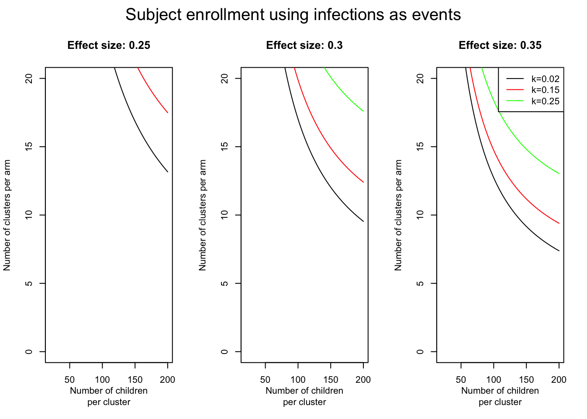
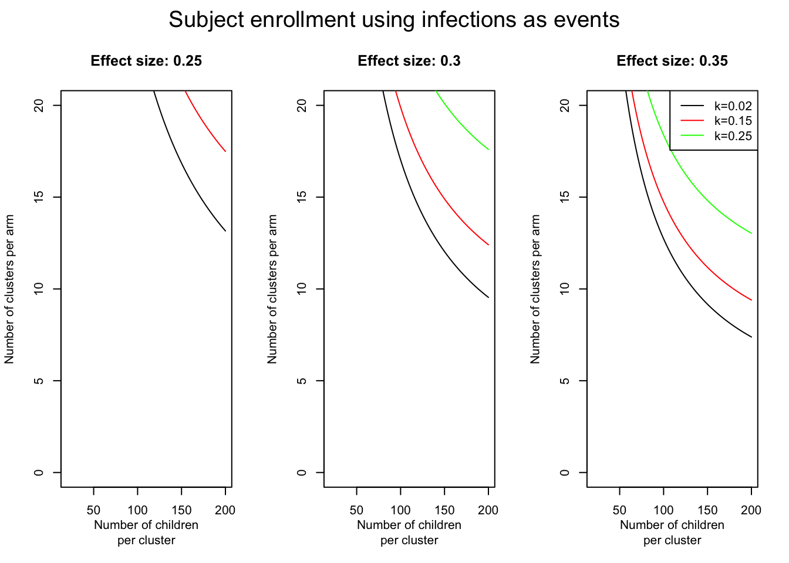

NULL
Dengue Fever is bits and bob. Its incidence is x. We use a catalytic modelling to inform study design.
Know S4 in Colombo for age ranges (find the Lambda in Colombo)
Get disease data for Colombo and Gampaha
Link lambda with disease in Colombo (find Rho)
Using the Rho from Colombo, find the number of, passive surveillance cases, acive surveillance cases and Infections (through seroprevalence. Find Lambda with disease in Gampaha with the Rho of Colombo
Power Calculations
We take the probability of first infection of ~ 14.1%. (CI x : y ) [1],
\[ P(First\;Infection|No\;Infection) = 1 - (1 - \lambda)^{4}= 0.141\ \\\ \\ therefore \; \lambda = 0.037 \]
We ran the simulation for 100 years, as the burn-in period. We determined the proportion of each susceptibility status per age.
Annual reported cases averaged over 5 years per 10 000 population is 100/10 000 pop. in Colombo and 77/10 000 pop in Gampaha. (ref)
\[ \rho = P(case|I2) = case detection proportion/ I2 \]
We estimated the relationship between force of infection and reported cases in Colombo, assuming all reported cases are due to secondary infections. We also assumed the force of infection to case relationship is the same in both areas.
3 outcomes to keep track of, passive surveilance, acitve surveillance (paper on probability of infection for different numbers) and then looking at the infections (I2 category instead of the D2) category.
We assume 100% Sensitivity and specificity in all diagnostics.
Passive surveillance case - Symptomatic infections that presents to a health facility in Gampaha in year x.
\[ PassiveCase = I2*P(case|I2) \]
Active Surveillance - Symptomatic infections identified by active surveillance in Gampaha in year x.
\[ ActiveCase = I2 * P(D2|I2) \]
Infection Surveillance - Any positive identified by Dengue IgG or IgM in Gampaha in year x.
\[ InfectionCase = I2 \]
We asume age distribution in Gampaha and Colombo are the same.
\[ n= (Z_\frac{\alpha}{2} \quad + \quad Z_\beta) ^2 \frac{\pi_0(1-\pi_0) + \pi_A(1-\pi_A)}{(\pi_0 - \pi_A)^2 } \]
\[ \text{assuming} ; n ; \text{individuals per cluster, the necessary number of clusters is calculated:} \]
\[ c = 1 + (Z_\frac{\alpha}{2} \quad + \quad Z_\beta) ^2 \frac{\frac{\pi_0(1-\pi_0)}{n}+ \frac{ \pi_A(1-\pi_A)}{n} + k^2 (\pi_0^2 + \pi_A^2) }{(\pi_0 - \pi_A)^2 } \]
NULL
plot_sample_infections()
We present the samples size on the x axis and clusters on the y axis for varying effect size \(\pi_{diff}\) and inter-cluster coefficient \(k\).
source("dengue_working.R")